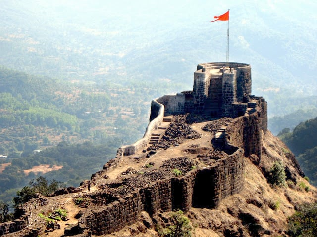
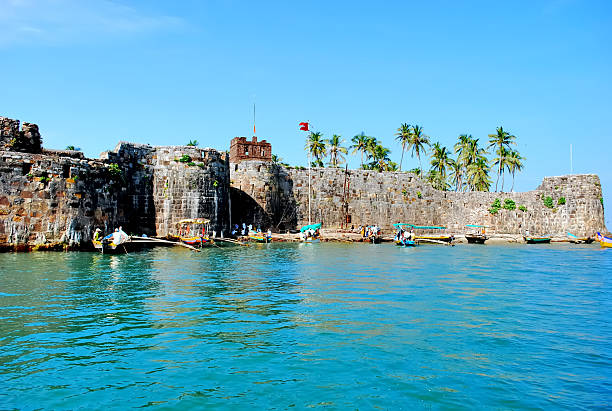

Raigad Fort

Pratapgad Fort

Sindhudurg Fort
Chatrapati Shivaji Maharaj (19 February 1630 – 3 April 1680) was a Maratha warrior king and the founder
of the Maratha Empire in western India. He is considered one of the greatest warriors in Indian
history and his military tactics are still studied in military academies worldwide.
Shivaji Maharaj was born in the Shivneri Fort near Pune. His mother, Jijabai, played a crucial role in
his upbringing, instilling values of courage and righteousness in him from an early age.
In 1645, Shivaji Maharaj acquired Torna Fort, marking the beginning of his military endeavors. Over the
years, he went on to capture several forts, including Raigad, Pratapgad, and Sindhudurg.
His crowning as the Chhatrapati of the Maratha Kingdom in 1674 marked the formal establishment of his
rule. Shivaji Maharaj not only excelled in military strategy but also demonstrated exceptional
administrative skills. He promoted a decentralized administration, ensuring effective governance at
the local level.
Shivaji Maharaj's naval expertise led to the establishment of the Maratha Navy, a significant force in
the Arabian Sea. He built Pratapgad Fort to defend against the Adilshahi forces, showcasing his
strategic foresight.
Despite facing challenges from the mighty Mughal Empire, Shivaji Maharaj established a Maratha kingdom
that lasted for centuries and laid the foundation for the Maratha Confederacy. He was a visionary
leader who valued religious tolerance and had a deep respect for all faiths.
This tribute page is dedicated to the indomitable spirit of Chatrapati Shivaji Maharaj.
☞ 1630 - Born in Shivneri Fort.
☞ 1645 - Acquired Torna Fort, his first significant conquest.
☞ 1659 - Established Raigad Fort as his capital.
☞ 1674 - Crowned as the Chhatrapati of the Maratha Kingdom.
☞ 1674 - Established the Maratha Navy.
☞ 1676 - Built Pratapgad Fort to defend against the Adilshahi forces.
☞ 1680 - Passed away, leaving behind a powerful Maratha Empire.
"A king should never fall into the clutches of another, and should he do so, he should
strive to get rid of his situation, even at the cost of his life."
"It is the function of the king to kill, to punish, and to frighten, so that those who
do evil should be afraid."
"One must not be influenced by the inherent nature of a place; instead, one must be
undeterred in carrying out one’s duty."
Raigad Fort
Pratapgad Fort
Sindhudurg Fort
If you have time, you should read more about this incredible warrior on his Wikipedia page.